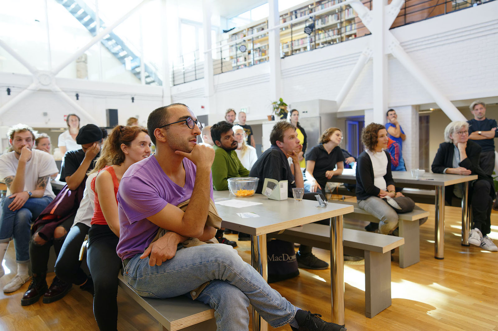
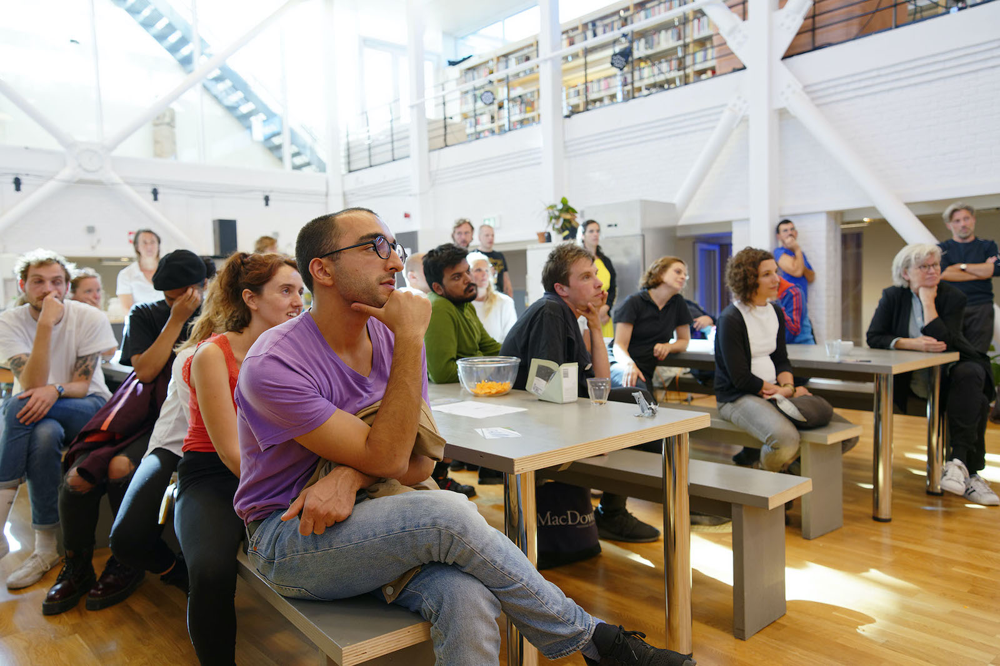

What if the beginning was not the beginning (and the end has already happened)?
DAS Graduate School in Amsterdam reunites under the same roof four post-graduate programs as departments in the field of Choreography, Theater, Research and Creative Production. DAS Theatre is one of the most innovative educational environments in performing arts, which questions theater, attempts to expand its range of languages, and claims an explorative space for the public.
“Hidden in Plain Sight”, suggested by Edgar Allan Poe, points out to the core of my collaboration with the Dutch art institute: to make the institution and its audience aware that, sometimes, the best place to hide something is to display it openly.
- How do you build-up and introduce a Marketing strategy plan in a moment of organizational change?
- How can you translate experience and know-how from festivals and art production houses contexts into the new scenarios for artistic education?
- How do you envision the communication in support of a double brand identity strategic positioning in between education and spectatorship?
Curate Fabrica has been called to stimulate more creative trajectories, to professionalize internal processes, and to introduce an alternative vision on brand identity and communication strategy looking to the future.
I shaped the workspace to make it more willing to take risks, to allow certain conditions that can lead to explore and produce new artistic projects on what theater can do and can be otherwise in the future. How? Reconsidering and treating the participants’ projects like professional works.
My role:
Head of Marketing, Communications & PR
International Program developer & coordinator
Collaborations and
partnerships:
PAF - Performing Arts Forum (Paris), Santarcangelo Festival 2020
(Italy), Motus Theatre Company (Italy), Flemish Cultural Centre De Brakke Grond,
Dutch Performing Arts Fund
Credits:
Pictures: Thomas Lenden Fotografie Studio
Graphics: concept and design by Studio Maaike B.;
head of editing and concept development by Andrea Rogolino (Curate Fabrica)
 

DAS Graduate School is changing on different layers, until it reaches an important point in rewriting its DNA after consolidating a strong vision and educational structure along more than 25 years of activities.
DAS Theatre has the particular necessity to internationalize more, but mostly in linking the educational program with the current state and dynamics taking place among the professional field.
Rethinking the visual communication strategy and focusing on stakeholders’ management strategies allowed to open up a dialogue with other organizations. It has been crucial to think and act across single departments, but also on the overall school: introducing performance measurement tools to guarantee quality, cross-accountability, and to ensure the adoption of the best strategy for each project. One among the others was a goals roadmap in order to track and share common milestones and projects’ developments.

Hidden in Plain Sight: International Professionals Program (IPP) x DAS Theatre
Neither a theater, nor just a school, but rather in between
In collaboration with Dutch Performing Arts NL (Fonds Podiumkunsten NL) and next to Silvia Bottiroli (DAS Theatre Artistic Director) we co-developed and coordinated a new pilot program to invite more than 50 Dutch and international performing arts professionals to explore, “touch” and go in conversation with the final graduation projects and participants by DAS Theatre 2019.
From Fundraising campaign, Project and Concept proposition, Stakeholder management strategies and Production planning steps, to Monitoring, Evaluation & Reporting phases, I coordinated the professional visitors in connection with the artists presenting their works. The process meant to make possible collective as peer-to-peer events, especially to result in post-graduation touring and PR.
What if the beginning was not the beginning (and
the end has already happened)?
Nomadic Curatorial Block x DAS Theatre
Video © Lele Marcojanni

In collaboration with Motus Theatre Company Italy) as the Artistic Direction for Santarcangelo Festival 2020 (Italy), DAS Theatre decided to move part of the educational program into a festival context, proposing certain questions through this long residency.
- Can DAS move far away from its physical educational base?
- How do you engage with different time(s) and smaller urban scales?
- How do you experience (and envision) new and unconventional learning processes within an event-based environment?
I supported the communication of the program. Strategies have been put in place to make activities, results and findings visible, working closely with the festival, as for the projects made together with the artists and guests.